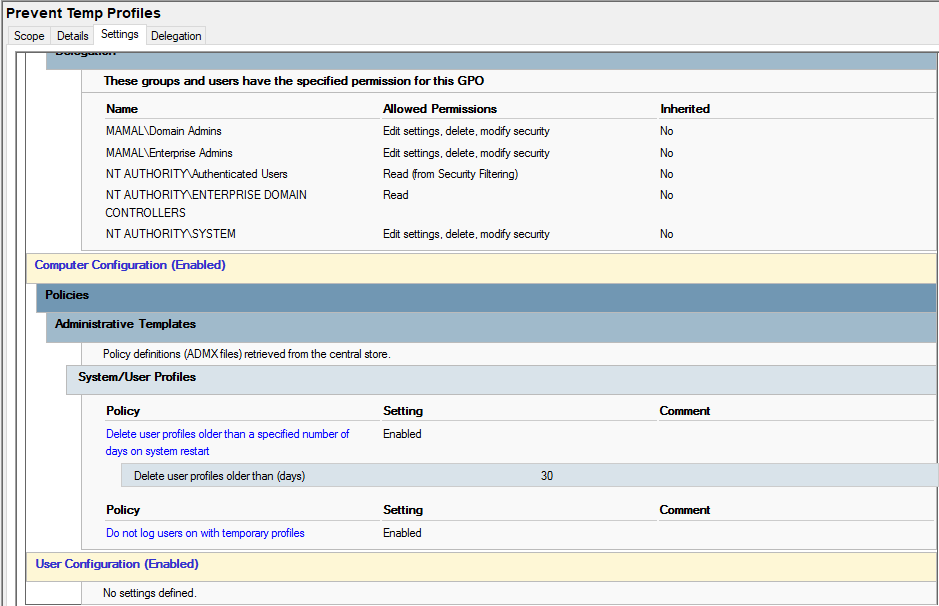

Prevent Temporary User Profiles
Purpose
This policy prevents Windows from logging users into temporary profiles. It ensures that users always access their correct profile with full access to settings, files, and configurations.
How it works
When enabled, this policy forces Windows to correctly load user profiles from the system or domain. If a profile issue occurs, the system will attempt recovery instead of creating a temporary profile session.
How it is applied
- Open Group Policy Management Console (GPMC)
- Edit the Computer Configuration policy
- Navigate to: Computer Configuration → Administrative Templates → System → User Profiles
- Enable policies related to profile loading stability
- Ensure “Do not log users on with temporary profiles” is enabled
- Apply changes and run
gpupdate /force
Impact
- Prevents data loss caused by temporary profiles
- Ensures consistent user environment
- Improves login reliability in lab systems
Screenshot
Temporary profile prevention policy in Group Policy Editor:
